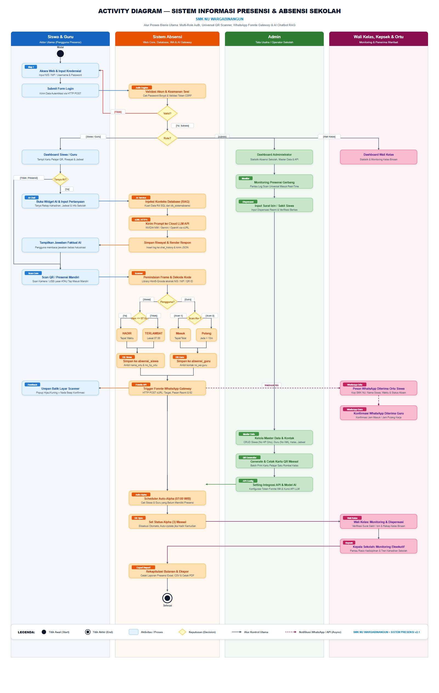
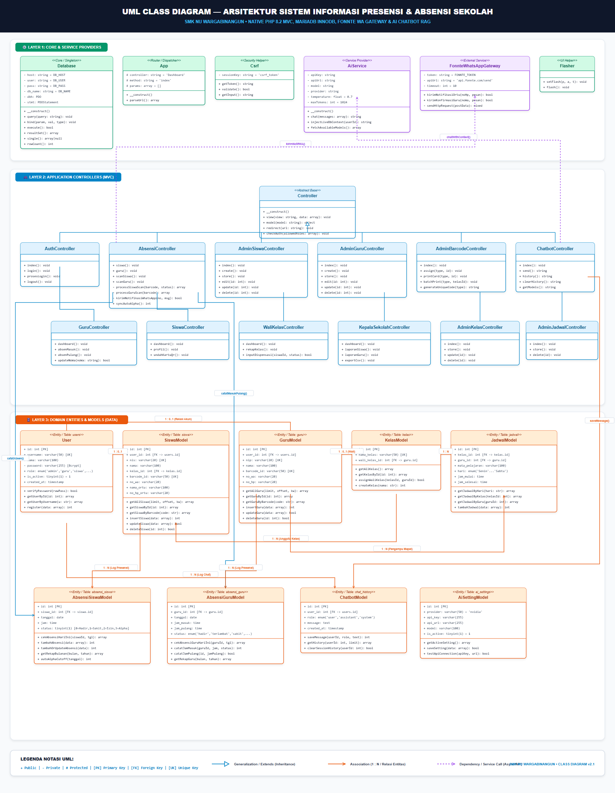
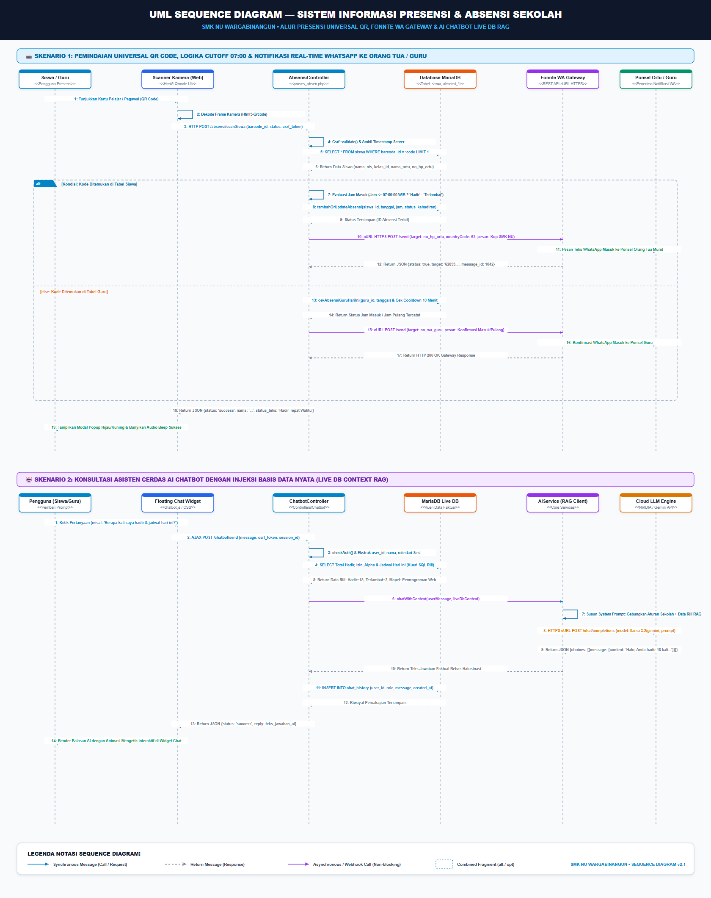
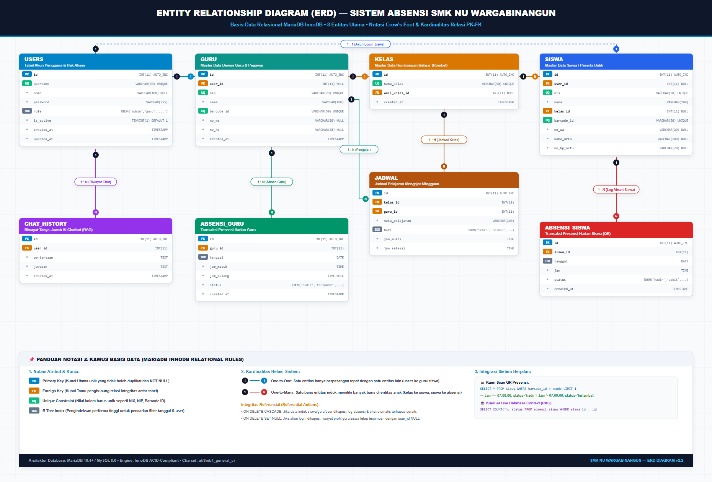
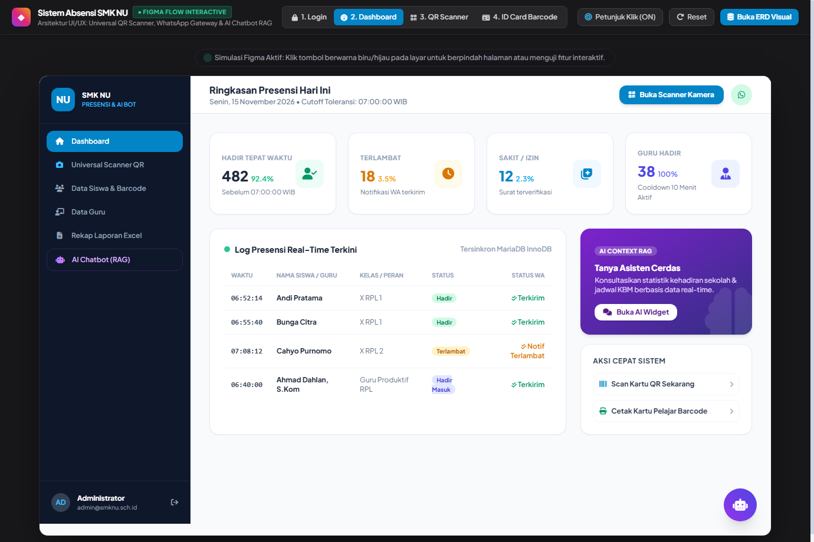

Sistem Presensi & Absensi QR Code
Integrasi WhatsApp Gateway & AI Chatbot Live Database Context (RAG)
SMK NU WARGABINANGUN
Presenter: [Sebutkan Nama Kamu] • Kelas XII RPL • Tahun Ajaran 2026/2027
Arsitektur: PHP 8.2 MVC • MariaDB InnoDB
RUNDOWN PRESENTASI
Struktur & Alur Pembahasan (24 Menit)
Product Requirement Document (PRD)
3 Masalah presensi manual di SMK NU, tujuan sistem, serta kebutuhan fungsional & non-fungsional.
Menit 02:00 – 05:30Perancangan UML, Basis Data & UI/UX
Bedah teknis Use Case, Activity Swimlane, Class Diagram MVC, Sequence Diagram, ERD, dan Prototipe Figma.
Menit 05:30 – 15:30Live Demo Aplikasi Nyata
Pengujian scanner webcam real-time, bunyi beep, bukti WhatsApp ke ponsel ortu, dan AI Chatbot live DB.
Menit 15:30 – 22:30Evaluasi & Rencana Masa Depan
Dampak positif implementasi bagi sekolah, rencana fitur Face Recognition, dan salam penutup.
Menit 22:30 – 24:00PRODUCT REQUIREMENT DOCUMENT
Latar Belakang: 3 Masalah Presensi Kertas Konvensional
1. Kecurangan & Waktu Tidak Presisi
Presensi manual rentan titip absen atau pemalsuan tanda tangan. Jam kedatangan aktual tidak tercatat presisi detik demi detik.
2. Orang Tua Was-was & Tidak Tahu
Tidak ada notifikasi ke rumah saat siswa tiba di sekolah. Orang tua baru tahu jika siswa membolos setelah berhari-hari kemudian.
3. Rekapitulasi Manual Memakan Waktu
Wali kelas dan tata usaha harus menghitung ribuan baris kertas di akhir bulan. Risiko kertas absensi basah, sobek, atau tercecer.
PRODUCT REQUIREMENT DOCUMENT
Kebutuhan Fungsional & Fitur Utama Sistem
1. Universal QR Scanner
Kamera peramban otomatis memindai kartu pelajar siswa dan kartu pegawai guru dalam <0.5 detik.
2. Logika Cutoff 07:00:00 WIB
Jam ≤ 07:00:00 otomatis status 'Hadir'. Jam > 07:00:00 otomatis status 'Terlambat'.
3. Cooldown 10 Menit Guru
Mencegah double scan masuk/pulang guru dalam rentang waktu yang terlalu dekat.
4. Fonnte WA Gateway
Pesan WhatsApp resmi berkop SMK NU terkirim otomatis ke ponsel orang tua murid dan dewan guru.
5. AI Chatbot Live DB (RAG)
Asisten cerdas menjawab pertanyaan kehadiran & jadwal KBM berdasarkan data riil MariaDB.
6. Rekapitulasi Excel & PDF
Ekspor laporan rekap kehadiran per kelas secara instan dengan kalkulasi persentase otomatis.
PERANCANGAN UML
Use Case Diagram — Batasan Sistem & Interaksi Aktor
5 Aktor Manusia & Hak Akses:
- 1. Administrator: Mengelola master data, akun, konfigurasi gateway WA, dan rekap global.
- 2. Guru: Presensi masuk/pulang, cek jadwal KBM, dan riwayat pribadi.
- 3. Siswa: Pemindaian kartu presensi dan akses mandiri data kehadirannya.
- 4. Wali Kelas: Memantau dan mengunduh rekapan satu rombel kelas binaan.
- 5. Kepala Sekolah: Pemantauan dashboard eksekutif persentase kehadiran sekolah.
2 Aktor Eksternal & Relasi Sistem:
- Fonnte WA Gateway: Dipicu otomatis saat transaksi presensi tersimpan.
- Cloud LLM Engine: Menghasilkan respon inferensi cerdas pada AI Chatbot.
- Relasi <<include>>: Use case Scan Barcode mewajibkan eksekusi Validasi Cutoff 07:00 dan Kirim Notifikasi WA.
- Relasi <<extend>>: Fitur ekspor Excel memperluas fungsi modul laporan.
PERANCANGAN UML
Activity Diagram Swimlane — Alur Presensi QR & Alur AI

Poin Alur Swimlane:
1. Scanner Kamera: Pustaka Html5-Qrcode mendekode frame webcam real-time.
2. Percabangan Siswa: Jam ≤ 07:00 (Hadir), Jam > 07:00 (Terlambat).
3. Percabangan Guru: Jeda minimal 10 menit untuk scan jam pulang.
4. Fonnte Gateway: Pesan WA terkirim asinkron tanpa memblokir antrean.
5. Umpan Balik: Nada beep audio dan popup modal hijau muncul di layar gerbang.
PERANCANGAN UML
Class Diagram — Arsitektur MVC PHP 8.2 Native

3 Lapisan MVC:
• Controllers: AbsensiController, ChatbotController, AdminBarcodeController, AuthController.
• Models: AbsensiModel, SiswaModel, GuruModel, KelasModel, UserModel.
• Core & Services: AiService (REST API LLM), Database (Singleton Pattern), dan Csrf (Token Kriptografi).
• Keamanan: Kebal SQL Injection berkat PDO Prepared Statements.
PERANCANGAN UML
Sequence Diagram — Alur Pertukaran Pesan Runtime

Kronologi Runtime:
• Skenario 1 (Presensi QR): 19 langkah waktu eksekusi mulai dari pemindaian kamera hingga notifikasi WhatsApp masuk ke HP orang tua.
• Skenario 2 (AI Chatbot RAG): 14 langkah injeksi data riil database ke Cloud LLM untuk menghasilkan balasan akurat bebas halusinasi.
PERANCANGAN BASIS DATA
Entity Relationship Diagram (ERD) — MariaDB InnoDB

8 Entitas Utama:
1. users: Akun login terpusat (password Bcrypt).
2. guru & siswa: Relasi 1:1 ke tabel users.
3. kelas & jadwal: Pengaturan rombel & KBM.
4. absensi_siswa & guru: Relasi 1:N log presensi.
5. chat_history: Log percakapan asisten AI.
• ON DELETE CASCADE: Menjamin integritas referensial data bersih tanpa rekam yatim.
DESAIN ANTARMUKA PENGGUNA
Prototipe Interaktif UI/UX — Figma Presentation Mode

Fitur Prototipe Figma:
• Clickable Prototype: Tombol-tombol siap diklik untuk simulasi alur nyata.
• Multi-Role Switcher: Pilihan login Admin, Guru, Siswa.
• Scanner Viewport: Animasi laser dan popup notifikasi WhatsApp resmi.
• Cetak Kartu: Simulasi fisik ID card tanda pelajar ber-barcode.
• AI Chatbot: Obrolan cerdas live database.
LIVE DEMO APLIKASI NYATA
Skenario Uji Coba Operasional Sistem
1. Login & Dashboard
Login Admin, verifikasi 4 KPI kehadiran dan koneksi Fonnte WA Gateway online.
2. Scan QR Kamera
Arahkan kartu Andi Pratama (BC-SISWA-001) ke webcam: bunyi beep dan popup hijau muncul.
3. Bukti Pesan WhatsApp
Tunjukkan ponsel orang tua: notifikasi kehadiran resmi berkop SMK NU langsung masuk.
4. Cetak Kartu Barcode
Filter siswa per kelas dan cetak Kartu Tanda Pelajar fisik ber-barcode tajam.
5. Uji AI Chatbot RAG
Tanya statistik kehadiran ke AI: buktikan jawaban faktual bersumber dari tabel database.
6. Ekspor Rekap Excel
Pilih tanggal dan unduh file laporan kehadiran resmi dalam format spreadsheet Excel.
HASIL PENGUJIAN
Komparasi: Sistem Presensi Manual vs Digital SMK NU
FITUR INOVASI UNGGULAN
Asisten AI Chatbot: Live Database Context (RAG)
❌ Chatbot Tradisional Biasa:
- • Hanya menjawab teks template atau karangan umum.
- • Tidak mengetahui apakah siswa bersangkutan hadir atau terlambat hari ini.
- • Rawan terjadi halusinasi data fiktif.
✅ Asisten AI SMK NU (RAG Aktif):
- • Menginterogasi basis data MariaDB secara live sebelum merangkai jawaban.
- • Mengetahui riwayat kehadiran faktual: "Halo Andi, Anda hadir 18 kali dan terlambat 1 kali bulan ini."
- • 100% akurat, kontekstual, dan bebas halusinasi.
ROADMAP & FUTURE PLAN
Rencana Pengembangan Sistem Masa Depan
1. Biometrik Wajah (Face Recognition)
Menambahkan verifikasi wajah melalui kamera AI sebagai faktor autentikasi kedua (2FA) untuk mencegah kartu dipinjamkan.
2. Aplikasi Mobile Android & iOS
Membangun aplikasi mobile bagi orang tua murid agar dapat melihat grafik kehadiran dan absensi langsung via notifikasi push.
3. Gerbang Otomatis (Turnstile IoT)
Menghubungkan scan barcode ke perangkat solenoid relay untuk membuka pintu gerbang putar otomatis di sekolah.
TERIMA KASIH!
Sistem Presensi & Absensi QR Code SMK NU WARGABINANGUN
Solusi Digitalisasi Absensi Sekolah yang Cepat, Akurat, Transparan, dan Cerdas Berbasis Web & Kecerdasan Buatan.
Kompetensi Keahlian Rekayasa Perangkat Lunak (RPL) • SMK NU WARGABINANGUN